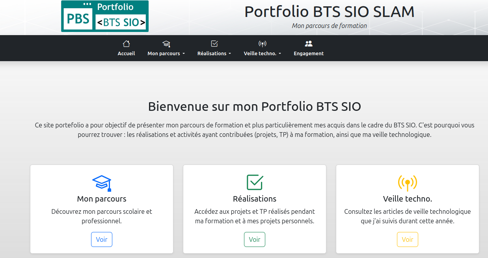
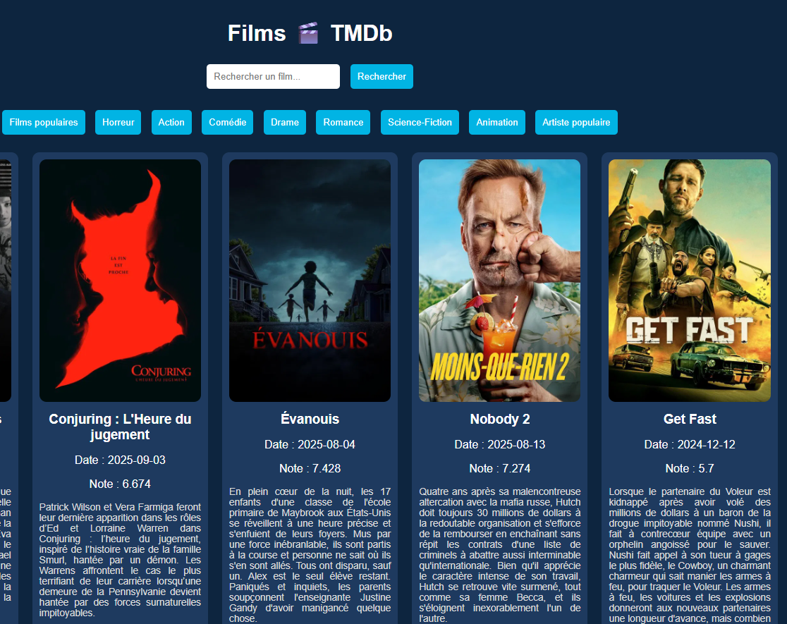
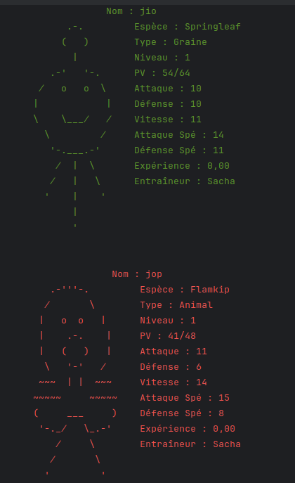
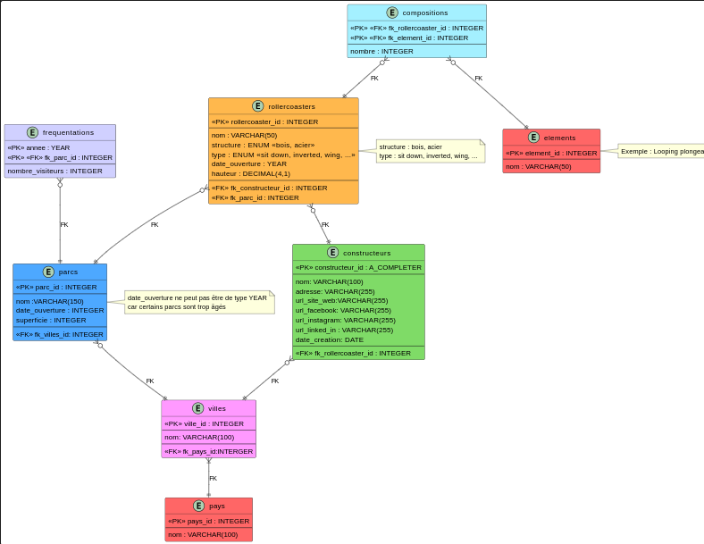

Mes Projects

J’ai créé ce portfolio statique dans le cadre de ma formation en BTS SIO. Il est basé sur Pelican, un générateur de sites statiques, et utilise Bootstrap 5 pour la mise en page. Ce projet me permet de présenter mes compétences, mes projets et mes expériences de manière professionnelle.

J'ai conçu une barre de recherche connectée à Google et Youtube afin d'offrir une navigation rapide et intuitive vers les résultats web directement depuis l'interface du site.

Application web permettant de rechercher des films, de consulter les films populaires et par genre, et de découvrir des artistes célèbres. Le projet utilise l’API TMDb pour récupérer les données en temps réel et propose une interface responsive avec affiches, titres, notes et descriptions.

Application web permettant de rechercher des chansons ou artistes, avec des vidéos YouTube intégrées. Le projet offre une interface responsive et intuitive pour découvrir et écouter de la musique .

Kotlin Monsters est un jeu d’aventure en Kotlin, inspiré de Pokémon. Le joueur incarne un dresseur chargé de capturer des monstres, combattre, les faire évoluer et collectionner des badges en explorant différentes zones.

Création d’une base de données complète sur les parcs et montagnes russes d’Europe (UML, SQL, MariaDB).